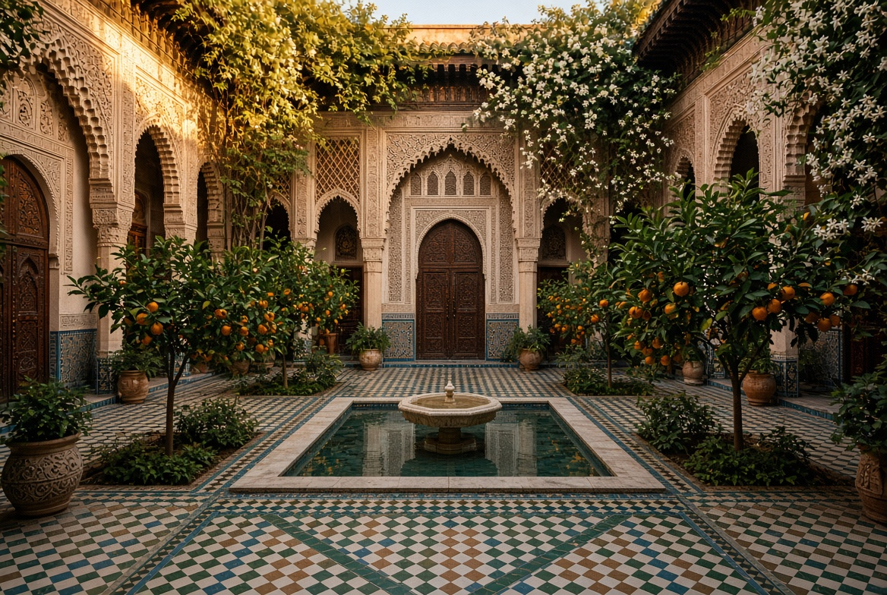
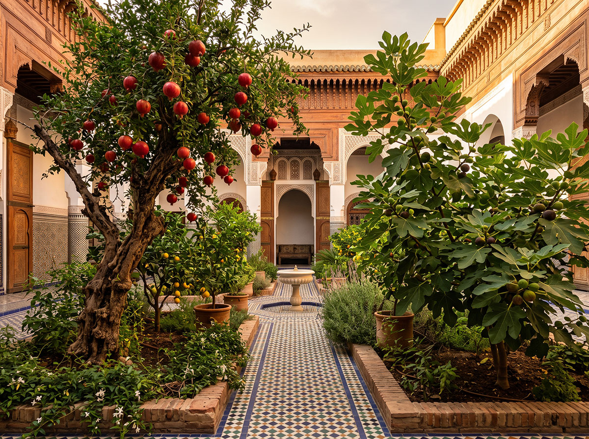
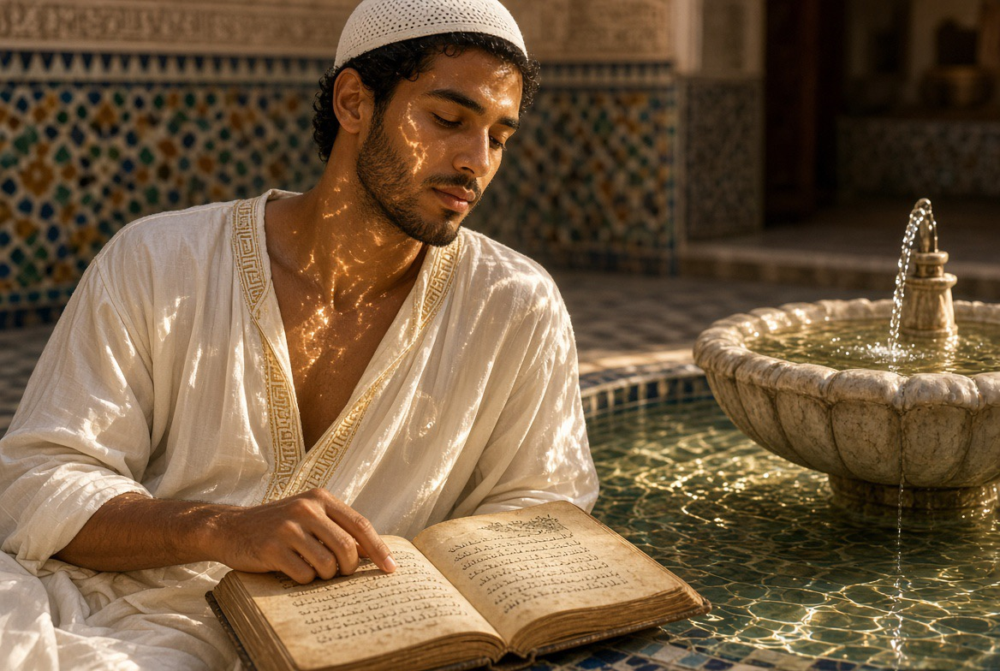

Architecture
Le riad comme dispositif climatique, social et spirituel. Patio, chambres, atelier, hammam, jardin, eau et air — une maison habitée, pas un décor.

Avant même la cour, il y eut l'oasis. Dès le IVe millénaire avant notre ère, dans les déserts méditerranéens, la wāḥa (واحة) n'est pas un don du hasard : elle naît de la décision d'un groupe humain de rester et de faire fructifier l'eau rare — canaux souterrains, arbres plantés en strates pour créer un microclimat. Le principe qui gouvernera, des siècles plus tard, la moindre cour du Riad est déjà là : l'eau organisée, jamais gaspillée.
Bien avant l'Islam, la Méditerranée avait déjà compris ce principe. Dans la Grèce antique, à Olynthe, les maisons s'ouvraient déjà sur une cour intérieure — l'aulé — orientée pour recevoir le soleil bas de l'hiver et se laisser ombrager en été. Ce n'était pas un luxe : c'était une intelligence climatique à la portée de tous.
Rome en hérite à son tour : la domus romaine s'organise autour de l'atrium, cour à ciel ouvert qui recueille l'eau de pluie — le même principe qui, des siècles plus tard, deviendra le patio andalou, puis marocain.
Le monde arabo-andalou en hérite et l'affine, avec deux dispositifs distincts pour l'eau : le salsabīl, cette fine lame d'eau qui coule sur une pierre inclinée pour maximiser l'évaporation (déjà présent au patio du Riad), et la fisqiya, la vasque au ras du sol que l'on retrouve au Patio de los Leones et au Patio de la Acequia de l'Alhambra — deux manières de faire de l'eau un climatiseur, non un simple ornement.
Matériaux


Espaces

Patio
Cour intérieure, fontaine, reflet du ciel — le cœur silencieux de la maison.

Jardin
Cour intérieure, ombre, eau, silence.

Hammam
Purification, repos, tradition andalouse — le rythme ancien du bain.

Fraîcheur naturelle
Dispositifs passifs, ventilation, ombre.

L'eau
Fontaines, bassins, circulation.